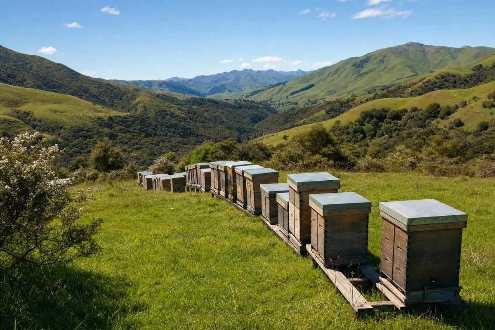
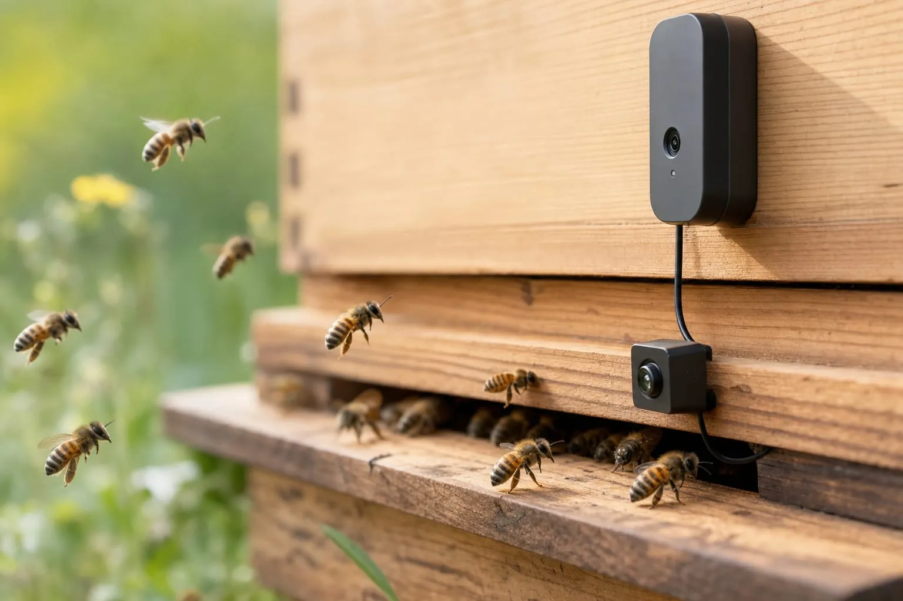

벌통 입구서 응애 살핀다, 한국 기업들 뉴질랜드 실증
뉴질랜드 양봉장 3곳 벌통 50통 대상…1년에 한 번 설문뿐인 응애 피해 측정 공백 겨냥

그래픽: 대표 그림은 언덕 비탈에 벌통이 줄지어 놓인 양봉장을 표현한 것으로, 실제 실증 양봉장을 찍은 것이 아니다 (AI로 만든 이미지, BeeAI 홍보용)
누리인포스를 비롯한 한국 기업들이 2026년부터 뉴질랜드 양봉장 3곳에서 벌통 입구의 카메라·마이크와 환경 센서로 벌통 상태를 살피는 해외실증을 추진하고 있다. 사업 측은 꿀벌에 기생하는 진드기인 응애의 피해가 큰데도 그 실태를 1년에 한 번 설문으로만 파악한다며 이 ‘측정 공백’을 메우겠다고 밝혔다.
‘BeeAI’로 불리는 이 사업은 소프트웨어 기업 누리인포스가 주관하고 반도체 설계 기업 FYD와 스마트 양봉 기업 온팜(브랜드 비온팜)이 참여한다. 2026년 7월 사업 홍보 자료에 따르면 실증 대상은 뉴질랜드 양봉장 3곳의 벌통 50통이고 기간은 2026년 9월부터 2027년 3월까지 이어지는 시즌이다.
1년에 한 번뿐인 설문
뉴질랜드 1차산업부(MPI)의 2023년 봉군(꿀벌 무리) 손실 조사에서 겨울철 봉군 손실률은 12.65%였다. 원인별로는 응애로 인한 손실이 6.4%로 가장 컸다. 한국에서는 응애 방제약 아미트라즈 내성과 관련된 유전자 변이가 2024년 전국으로 퍼졌다는 외부 연구(Lee 2025)도 나왔다.
이 손실 조사는 양봉가가 1년에 한 번 지난 시기를 돌아보며 답하는 설문이다. 사업 측은 양봉장에서 응애를 상시·연속으로 측정해 조기에 경보하는 데이터가 없다고 보고 이 공백을 메우는 것을 목표로 내걸었다.
벌통 옆에서 판단하는 칩
벌통 입구의 카메라는 드나드는 벌의 몸에 붙은 응애를 관찰해 그 정도를 수치로 나타낸다. 이 값은 정밀 검사로 얻는 감염률과는 다른 지표라고 사업 측은 설명했다. 마이크는 벌통 소리의 변화를 듣고 온도·습도·무게 센서는 건강한 상태와 얼마나 다른지를 살핀다. 사업 측은 소리 변화로 여왕벌이 없어졌거나 분봉(무리가 나뉘어 일부가 떠나는 일)이 다가온 신호를 잡아낼 수 있다고 밝혔다.

그래픽: 벌통 입구에 카메라를 달아 드나드는 꿀벌을 살피는 모습을 표현한 그림으로, 실제 실증 장비를 찍은 것이 아니다 (AI로 만든 이미지, BeeAI 홍보용)사업 측에 따르면 이런 판단은 벌통 옆에 둔 국산 AI반도체가 직접 한다. 데이터를 클라우드로 보내지 않고 현장에서 바로 처리하는 방식이어서 엣지 AI라고 부른다. 소리는 FYD의 저전력 AI반도체 ‘Doksan’이, 영상은 또 다른 AI반도체가 늘 분석하도록 두 칩 구조로 설계됐다. 사업 홍보 자료는 이 덕분에 통신이 끊긴 산간 양봉장에서도 작동한다고 소개했다. 다만 이런 판단이 실제 양봉장에서 얼마나 정확한지는 아직 실증 중이다.
문장으로 알려 주는 진단
누리인포스는 센서가 잡은 신호를 작은 언어모델로 분석해 농가가 읽기 쉬운 문장으로 바꾸는 일을 맡았다. 사업은 “3번 벌통 응애 위험, 24시간 내 점검 권장” 같은 자연어 진단을 지향한다. 양봉가가 수치나 그래프 대신 문장을 보고 판단하게 하겠다는 것이다.
2026년은 실증 단계
사업 측은 2026년 BeeAI의 역할을 탐지와 진단으로 정했다. 응애를 살피고 양봉가가 스스로 판단해 조치할 정보를 주는 데까지 맡는다.
사업 측은 응애 대응으로 약을 쓰지 않고 벌통 안 발열판으로 열을 가하는 열처리를 함께 연구하고 있다. 사업이 2027년을 바라보고 지향하는 방향은 탐지와 조치를 잇는 자동화다. 카메라로 본 응애 지표에 따라 처리 시점을 정하고 처리 뒤 변화를 기록하는 식이다.
2026년 7월 사업 홍보 자료를 보면 뉴질랜드에는 2026년 8월 중 1차로 장비 30세트를 설치하고 차례로 늘려 갈 계획이었다. 비온팜은 뉴질랜드 현지 3곳에서 수출 의향서(LOI)를 받아 두었다(2026년 7월 홍보 자료 기준). LOI는 구매 의향을 밝힌 문서로 계약과는 다르다.
이 사업은 과학기술정보통신부와 정보통신산업진흥원(NIPA)의 「엣지형 AI반도체 기반 뉴질랜드형 지능형 양봉 솔루션 해외실증」 과제로 추진되고 있다.
자료: BeeAI 사업 홍보 자료(2026년 7월), 뉴질랜드 1차산업부(MPI) 2023년 봉군 손실 조사, Lee(2025) 논문
저작권자 © 윙윙통신 무단 전재 및 재배포 금지